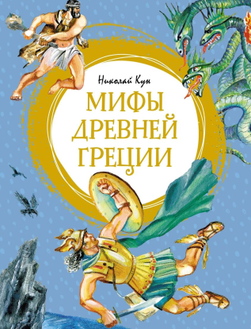

Мифы древней Греции
АвторНиколай Кун
Языкрусский
Жанрымифы
Возрастные ограничения6+
Переплеттвердый
Цена250 р
Кто отдаст
Cлава

13.03.2023
"Мифы и легенды Древней Греции” для меня книга детства. Я зачитывалась
приключениями героев и описанием пантеона богов. Во взрослом возрасте, конечно, многое
кажется просто ужасным — убийства, измены и чего похуже. Но такова жизнь была и из нее
сложились интересные истории. В какого-то момента жизни, уже не помню, но это были школьные
годы, я начала уважать Аида. Теперь я вспомнила за что. При всем уважении к героям, и
остальным богам, Аид самый адекватный из них. Его любовь к Персефоне это что-то невероятное
Никита
06.06.2021
Одна из лучших книг мифов Древней Греции, известный автор, очень хорошее
изложение содержимого, множество замечательных иллюстраций.
Кира

03.05.2022
По этой книге, я готовилась к экзамену по культурологии во время
университета. И я не помню, чтобы в этой книге, хотя бы раз не нашлось нужной мне
информации.
Книга замечательная и я знаю, что помимо культурологов, художников, искусствоведов,
психологов и тому подобное, люди интересуются мифологией, в частности древнегреческой, так
как она — колыбель европейской культуры.
Чем хороша эта книга? — в ней есть всё и обо всем (в рамках греч. мифологии). Вы узнаете
много уже знакомых и неизвестных персонажей, легенд, которые имеют интересную индивидуальную
историю.
Самые известные божества, герои и цари, стали легендарными образами в культуре и искусстве,
в живописи, кинематографе, в истории. Многие даже не осознают, какое таинство в себе хранит
мифология, поэтому рекомендую ознакомиться с книгой, хотя бы периодически читать некоторые
мифы и легенды, уверена что увлечёт!